Microscopy Image Browser Toolbar
Toolbar under the main menu. The toolbar offers fast access to few most frequently used functions.
Back to Index --> User Guide
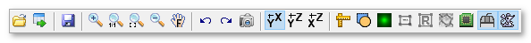
Contents
- Paste dataset from the system clipboard
- Virtual mode switch
- Development shortcut...
- Save model
- Zoom in
- 1:1
- Fit to screen
- Zoom out
- Fast pan mode
- Undo
- Redo
- Make snapshot
- YX, YZ, or XZ
- Line measure tool
- Interpolation type
- Type of image rescaling for visualization
- Center marker toggle
- Block-mode switch
- Show ROI switch
- Volume Rendering
- Turn on parallel processing
- Swap left and right mouse button
- Mouse button
Paste dataset from the system clipboard
Pastes image from the system clipboard. This functionality is implemented using IMCLIPBOARD function by Jiro Doke, MathWorks, 2010.
Virtual mode switch
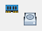
By default MIB works in memory-resident mode, when each dataset is loaded completely to computer memory. For large datasets it may take long time to load the datasets, in this case the virtual (harddrive-resident) mode can be used to browser the datasets. The virtual mode is enabled when this button has a HDD icon. It is possible to open datasets in the HDF5 format and datasets that are compatible with the Bio-Formats library. In later case, please make sure that the Bio checkbox of the Directory Contents panel is enabled.
The virtual mode is more limited comparing to the memory-resident mode and yet can't be used for image segmentation. The only segmentation tools available in the virtual mode for MIB version 2.40 are Annotations and 3D Lines.
Development shortcut...
Reserved for the development purposes
Save model
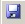
Saves model to a file in the Matlab format. The file name is not asked, which means that the MIB will use:
- Default template such as Labels_NAME_OF_THE_DATASET.model
- The name that was provided from the Save model as... entry
- The name that was obtained during the Load model action The models can be saved also using the Save model command in Menu->Models.
Zoom in
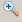
Increases magnification in 1.5 times.
1:1
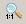
Magnifies to 100% magnification.
Fit to screen
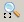
Fits the image to the view image panel.
Zoom out
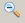
Decreases magnification by 1.5 times.
Fast pan mode
Panning an image means moving the image displayed in the Image View panel. This mode is enabled during pressing of the right mouse button. Normally to pan the image MIB gets full sized image of the currently shown slice. When the Width/Height of the image is high it results is a small lag. Enabling this mode reduces the lag, but does not allow to see the full image during the panning process.
Undo
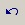
Does Undo operation (Ctrl+Z shortcut): restore the previous state of the dataset. The length of the Undo history can be set in the Menu->File->Preferences.
Demonstration of the undo/redo system is available in the following video:
 https://youtu.be/PrY3Eo02gU8
https://youtu.be/PrY3Eo02gU8
Redo
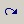
Does Redo operation: re-apply the last undone action.
Make snapshot
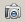
Makes snapshot of the current slice. See more here.

YX, YZ, or XZ
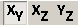
Changes the viewing plane orientation. Default is the XY plane. Some tools may not work if the dataset is not in the XY orientation. There are following key shortcuts that allow to switch the plane of the dataset. As shown on the image below, placing the mouse cursor in the XY view above the intersection of two colored lines and pressing Alt+3 will switch the orientation to the ZY plane.
- Alt+'1', switches the view to the XY plane using the image coordinates under the mouse cursor
- Alt+'2', switches the view to the ZX plane using the image coordinates under the mouse cursor
- Alt+'3', switches the view to the ZY plane using the image coordinates under the mouse cursor
A demonstration is available in the following video:
https://youtu.be/4NXSEkrhnts
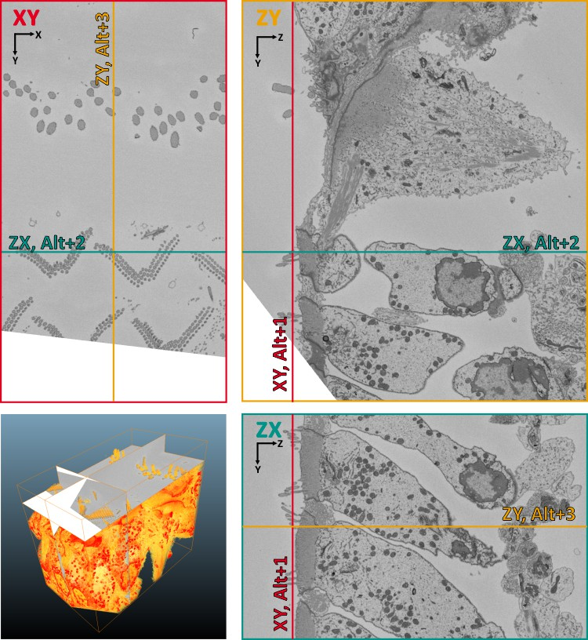
Line measure tool
Measures linear distance. See more in the Tools menu.
Interpolation type
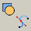
Changes type of the interpolator: for shapes, or for lines. See more in the Selection menu.
Type of image rescaling for visualization
Changes type of the image resizing for the visualization: use 'nearest' to see unmodified pixels and 'bicubic' for smooth appearance. Note! the nearest option gives the fastest and bicubic the slowest performance.
A demonstration is available in the following videos:
https://youtu.be/N7jFSUOrVCg
https://youtu.be/T08fJeucn0U
Center marker toggle
Switch on/off marker for the center of the image axes. It is helpful when doing the graphcut segmentation using the grid mode.
Block-mode switch
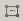
When enabled the filters will only be applied to the part of the dataset shown on the screen. This speeds up performance and may be good for any kind of tests. Please note: this is not compatible with ROIs, i.e. when the ROIs are shown MIB will work with the full dataset.
Show ROI switch
Turns ON/OFF visualization of ROIs
Volume Rendering
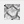
Render the dataset using the shear-warp transform. Applicable to fairly small datasets. The electron microscopy datasets should be inverted for proper visualization.
A demonstration is available in the following video:
https://youtu.be/rCYSTKF0TsM
Turn on parallel processing
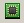
Starts matlab parallel processing routine. Requires the parallel processing toolbox. It seems that it is not really needed, Matlab handles the paralling of processing automatically in many cases.
Swap left and right mouse button
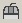
In the default state the left mouse button is responsible for panning the image and the right mouse button for selection, when this button is pressed the mouse button behavior is swapped. These modes can also be set from the Menu->File->Preferences dialog.
Mouse button
Switches the way of zooming and changing the slices of the dataset. When the button is not pressed the mouse wheel changes the magnification and the Q and W buttons change the slices. These modes can also be set from the Menu->File->Preferences dialog.
Back to Index --> User Guide